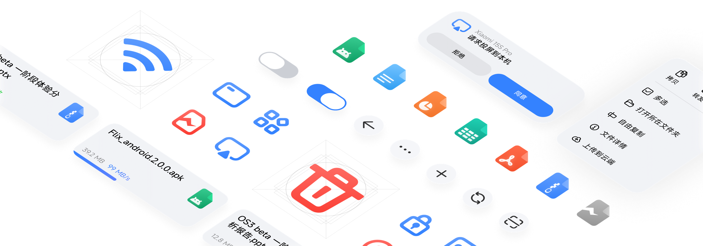

手机电脑隔空传文件，这款工具让我彻底关掉了微信文件传输助手
装了 flix 一周，我把用了五年的微信文件传输助手设成免打扰。聊聊上手第一印象、聊天式交互为什么比传统传输工具顺手，以及自动接收和历史记录这两个让我真·提高效率的功能。
为什么会装它
说来惭愧，我之前传文件的主力手段一直是微信文件传输助手。手机拍的照片发电脑、电脑写的文档回手机，甚至连几个 G 的视频都硬塞过——直到上个月传一个 4GB 的工程素材被微信卡了二十分钟还告诉我"文件过大已压缩"，我才开始认真找替代品。
局域网传输工具其实不少，但真正让我愿意坐下来装的没几个。要么界面糙得像 2012 年的软件，要么配置起来要改一堆东西。flix 是朋友圈里一个做自媒体的朋友推的，说"装完就能用，没花里胡哨的东西"，官网风格也挺对我胃口，我抱着试试看的心态下了。
第一眼界面：像微信但不是微信
装完打开的那一刻，我愣了一下——这界面设计，完全就是即时通讯软件的样子。首页列的不是"附近设备"，是"联系人列表"，点进一台设备弹出的窗口长得跟微信聊天框几乎一模一样，顶栏显示对方设备名和网络状态，下面一大片空白等着"消息"。
而当我真的从手机选了一张照片发过去，它不是像其他工具那样弹出一个"传输任务已开始"的进度条弹窗，而是直接在那个聊天窗口里多出了一个消息气泡——进度条、传输速度、完成标记，全画在气泡上。

说实话这个设计我第一反应是"会不会太花哨了"——但用了两次之后发现，它真的解决了我一个长期痛点：传输记录就是聊天记录。上周传给电脑的那几张猫片、昨天从平板拉过来的 PDF，全部老老实实躺在对应设备的对话窗口里，往上翻就能找到，不用跑另一个"历史记录"页面去搜。
两个让我真觉得省时间的功能
第一个是自动接收。之前用过的类似工具，每传一个文件都要接收方点一下"确认接收"——朋友从他的手机给我发一堆素材，我得坐在电脑前连点十几个确定按钮。flix 把这个问题解决得很彻底：在设置里打开自动接收之后，文件直接落盘，连通知都只是轻轻弹一下。而且 2.2.3 版本之后还能分设备设置——自己的电脑和平板开着自动接收，临时连的公共设备保持手动，这个细节比我预想的还要贴心。
第二个是历史记录查找的日历视图。这个功能在旧版里是没有的，2.0.4 之后上的。之前找"上个月三号朋友发给我的那个压缩包"，得在列表里一直往上滑一直往上滑，手指都滑酸了。现在打开历史记录直接跳日历，点三号当天就能看到那一天收发的所有东西，按类型还能筛选图片、视频、文档。
不过说实话也有让我稍微别扭的地方——2.0 大改版之后界面虽然好看了（悬浮控件、浮层窗口、媒体查看器都挺精致），但第一次打开的时候我花了大概五分钟才找到"设置"在哪。不想折腾老版本的可以直接从官方下载拿最新版，2.0.4 那个全新悬浮 UI 虽然说好的设计才好用，但有些常用功能的入口位置变动挺大，老用户得适应一下。
适合谁，不适合谁
如果你的场景跟我类似——有多台设备（手机 + 电脑 + 平板）经常互传、传的东西又多又杂、还不想每次都手动确认，那 flix 应该能帮你省不少心。聊天式交互这套设计对于"传输量很大的重度用户"尤其友好，因为历史记录就是聊天记录，不用额外维护一套索引，想深入研究各种设置的话可以去flix文档翻一下。
但如果你只是偶尔传个文档、设备也没超过两台，可能会觉得它有点"杀鸡用牛刀"——功能太多了，投屏、远控、音视频通话这些你可能根本用不上，安装包也比同类的轻量级工具大不少。
另外得提醒一下：自动接收功能虽好，但千万别在公共 Wi-Fi 环境下开。虽然应用本身有设备黑名单机制挡陌生设备，但防君子不防小人，自动接收当成自己家的"内部快速通道"用就好。
一周下来的感受
用了一周，我确实把微信文件传输助手设成免打扰了。不是说 flix 完美无缺——设置入口变难找、偶尔连不上的时候得手动重连——但它解决的是我最痛的那几个问题：传输不用守着、记录不用翻、局域网速度够快。
现在每天早上到公司，手机里的日报截图直接丢电脑上，不用再掏微信出来等它转圈；晚上写代码存了个临时文件，从电脑推回手机也只是点两下的事。这些小事积少成多，真的能把一个人的工作节奏变顺畅。
文档和相关源码在三个地方都能拿到——GitHub 是主仓库，Gitee 和 GitCode 国内网络访问更顺畅，根据自己的环境选就行。